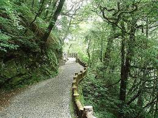

拉拉山國家森林遊樂區(以下簡稱本區)位於桃園市復興區北橫上巴陵一帶，此地的泰雅族上巴陵部落，其名「Balung」正是「檜木」或「巨大的倒木」之意；而「拉拉」為泰雅族語「R’ra」音譯，有「美麗的」、「讚嘆的」、「眺望、守望」等意，一說係指本區為族人眺望獵物、防禦外敵之處所，亦有族人來到此地感到讚嘆、美好之意，皆足以顯現本區具有豐富的檜木與生態資源。 全世界檜木分布只有在北美、日本及臺灣的雲霧帶才會有，因此，拉拉山的檜木森林是很珍貴的。本區位於霧林帶，植群分類屬原始針、闊葉混合林，完整保育千百年自然環境造就的珍貴檜木巨木群；亦為臺灣藍鵲、黃腹琉璃、臺灣野山羊等野生動植物重要棲息環境，係北部中海拔山區極具代表性之森林生態系，具有豐富之自然及人文特色。
